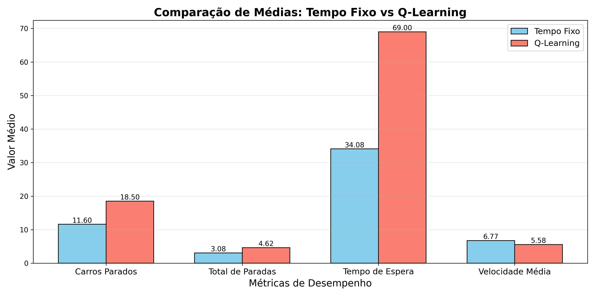

Interpretação: Este relatório compara o controle de semáforos tradicional (tempo fixo) com o aprendizado por reforço (Q-Learning). Valores menores em "Carros Parados", "Total de Paradas" e "Tempo de Espera" indicam melhor desempenho. Valores maiores em "Velocidade Média" são melhores.
| Algoritmo | Média | Desvio Padrão | Máximo | Mínimo |
|---|---|---|---|---|
| Tempo Fixo | 11.60 | 12.84 | 40 | 0 |
| Q-Learning | 18.50 | 25.29 | 72 | 0 |
Gráfico mostra a evolução ao longo do tempo. Linha azul: Tempo Fixo. Linha vermelha: Q-Learning.

| Algoritmo | Média | Desvio Padrão | Máximo | Mínimo |
|---|---|---|---|---|
| Tempo Fixo | 3.08 | 3.70 | 24 | 0 |
| Q-Learning | 4.62 | 6.32 | 18 | 0 |
Gráfico mostra a evolução ao longo do tempo. Linha azul: Tempo Fixo. Linha vermelha: Q-Learning.

| Algoritmo | Média | Desvio Padrão | Máximo | Mínimo |
|---|---|---|---|---|
| Tempo Fixo | 34.08 | 48.19 | 201.0 | 0.0 |
| Q-Learning | 69.00 | 108.27 | 281.0 | 0.0 |
Gráfico mostra a evolução ao longo do tempo. Linha azul: Tempo Fixo. Linha vermelha: Q-Learning.

| Algoritmo | Média | Desvio Padrão | Máximo | Mínimo |
|---|---|---|---|---|
| Tempo Fixo | 6.77 | 4.91 | 15.433536420404671 | 0.0 |
| Q-Learning | 5.58 | 5.62 | 13.293562958388078 | 0.0 |
Gráfico mostra a evolução ao longo do tempo. Linha azul: Tempo Fixo. Linha vermelha: Q-Learning.

Gráfico de barras mostra as médias gerais. Azul: Tempo Fixo. Vermelho: Q-Learning. Valores nas barras indicam as médias exatas.
